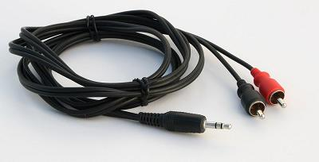
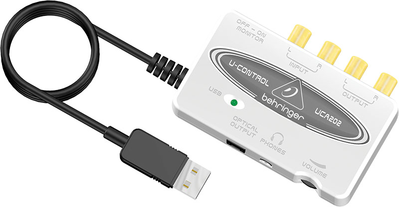
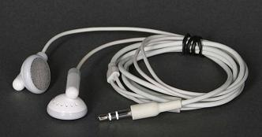
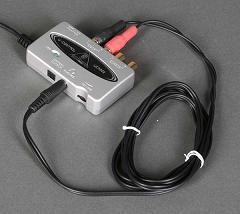
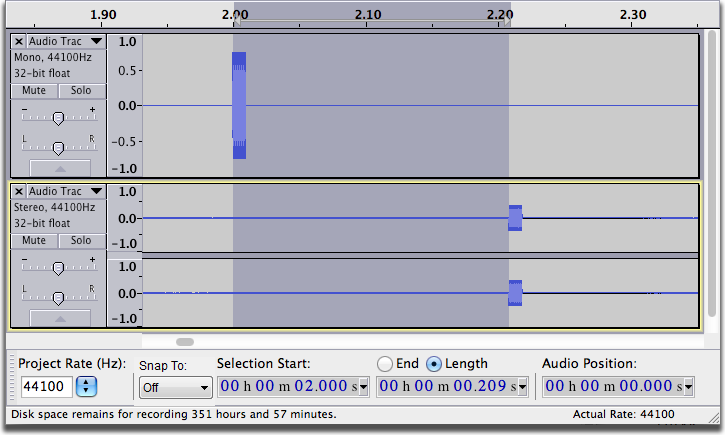
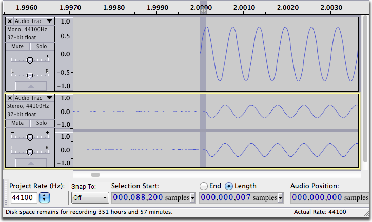

Overdubbing with a Behringer® UCA202 Stereo bidirectional USB audio interface
| The procedure is similar for any USB external soundcard providing that it has a headphone output and some way to mix the microphone signal with the USB playback signal.
If your USB soundcard does not have a headphone output, then you should follow the advice in Overdubbing using your computer's on-board soundcard, but using your USB microphone rather than your computer's built-in microphone. |
Hardware
This process uses your existing analog microphones, instruments, sound mixer or amp. You will be connecting your already working sound system to the computer and Audacity through a special, required USB soundcard. You will also need to use a short audio adapter cable during the system setup and adjustment:
- 
The Behringer® UCA202 can be used for overdubbing and sound-on-sound by connecting your computer to your headphones and analog stereo mixer, turntable/CD DJ system, keyboard or other music production equipment. It will not amplify a microphone or a turntable directly, and it will not work with a USB microphone and may not work with a USB mixer. It will work with a guitar pickup and the right cable adapters. We will be using a stereo mixer as the example in this tutorial.
- 
The UCA202 has a headphone connection and, when switched to Monitor-On, will mix sound from the computer playback with live performance sound. This is the mix you need to sing or play to yourself with no latency, echoes or other impairment. The mix is half-and-half and you can't change it, so it may take some experimenting to get the headphone mix just right as you perform.
Almost any Windows®, Mac® or Linux® machine with fast enough USB and good storage can be used. Our example here uses Mac earbuds for listening, but nearly any good headphones or earbuds are OK. If you require cranium-crushing headphone volume, you may need a headphone amplifier. You must get the headphone sound from the UCA202, not from the computer soundcard.
- 
Headphone monitoring is good; live microphones and speakers in the same room is a recipe for feedback.
The Behringer UCA202 has three jobs:
- It converts the mixer's stereo analog audio to digital and sends it down the USB cable for recording.
- It converts the USB digital audio from the computer back to stereo analog.
- It has an internal headphone mixer and mixes your existing track playback with your new, live performance so you can listen to both.
The one "magic" feature of this device is the ability to mix your live voice with the computer's rhythm track so you can hear the mixed musical performance and that can only happen if the rhythm track is available. Making the USB device the playback device makes this functionality available.
First Recording
First we will make a simple recording, with no overdubbing or other fancy tricks. The system has to work correctly for simple recording and playback before we go further.
Connect the USB, headphones and mixer.

The UCA202 must have a direct connection to the computer; USB audio will not go through a hub or long USB extension cables.
|
In this example we're using the sound mixer's Tape-Out for the connection.
This is not a tutorial on making a recording and playing it back, but you need to be able to do that before you do anything else. There are multiple tutorials and wikis on Recording.
Set the computer control panels, preferences and Audacity dropdowns to recognize the UCA202 USB device for both stereo recording and playback. The UCA202's name is USB audio CODEC.
Set Audacity Preferences:
Click on (on a Mac this is )
- in the Quality tab:
- set Default Sample Rate to 44100 Hz

- set Default Sample Format to 32-bit float
- set Default Sample Rate to 44100 Hz
- in the Devices tab:
- Under Playback set Device to USB Audio CODEC
- Under Recording set Device to USB Audio CODEC and set Channels to 2 (Stereo)
- Under Playback set Device to USB Audio CODEC
- in the Recording tab:
- check
 Overdub: Play other tracks while recording new one
Overdub: Play other tracks while recording new one - uncheck
 Software Playthrough: Listen while recording or monitoring new track
Software Playthrough: Listen while recording or monitoring new track
- check
In Audacity by default using the Record button
|
Click once anywhere inside the recording meter (the one with the mic icon) to put the meters into Monitor Mode. They will display the microphone's sound level without starting Audacity recording and wasting drive space. This may fail on certain Linux machines using Jack.
Switch the UCA202 Monitor to ON. The UCA202 has no volume controls for the audio being recorded or the audio being played on the computer. The volume has to be set at the mixer or amp. The only UCA202 control is headphone volume.
Play a record, play an instrument, or sing through the mixer. Don't peak much over -10 to -6 on the Audacity meters. You can fix low levels later, but you cannot fix overloading, smashing, and clipping (meters too far to the right). You should be able to hear your performance in the headphones. Adjust the UCA202 volume control as needed for comfortable listening.
Click "Record"; Audacity will take a second to configure itself and start recording. The blue waves will start to crawl left to right as you perform. Play or sing a simple song that you can use for rhythm and timing tests later.
Click "Stop", then "Home" and then click "Play" to hear the track you have just made. You should hear the track in your headphones. While listening, if you tap or scratch the microphone, you can hear the scratching/tapping too--they're both live.
This is an example of what you will hear during the overdub sessions. Any combination of existing tracks will play in your headphones, in addition to your live voice, allowing you to set a good mix and timing.
Setting the Recording Latency
Click "Home" then click "Record" and you will get a new recording underneath the first one. Sing or perform in time to the first track; when finished click on "Stop" then "Home".
The project will have two tracks, one from each performance, but it may be seriously out of time or rhythm -- even though you were in perfect time when you recorded it. This is recording latency and you can adjust it to zero using Audacity's latency tools; done properly, both the live recording session and the later playback will be in perfect time.
- Choose click "Don't Save".
- Choose .
- Choose click "OK" - to generate a click track
- Audacity set "Latency Correction" to [ 0 ] milliseconds, click "OK".
- Unplug the headphones. Turn the UCA202 headphone volume about 2/3 of the way up. Switch the Monitor to OFF.
- Plug an audio adapter cable between the Headphone jack of the UCA202 and its Line-In jack:
- 
- Click "Shift + Record". Track one's click track is now being recorded onto track two through the adapter cable -- good fidelity or volume here is irrelevant.
- Do that for five or ten seconds and click Stop.
- Reduce the volume a bit and plug the headphones back in and put them on.
- Select the new track and choose (accepting the defaults) click "OK".
- Click "Play", both tracks will probably play out of step.
- Magnify the Timeline around one of the pair of clicks (drag-select and CTRL + E - or on Mac CMD + E).
- Drag-Select the distance between the start of the click on the top track and the start of the same click on the bottom track.
- 
- That's how much the rhythm misses and that's the latency. Keep magnifying until you can get a good shot at accuracy. Use CTRL+3 - or on Mac CMD+3 to back out slightly if you magnify too much by accident.
- At the bottom of the Audacity window in the Selection Toolbar set the middle time control to "Length" (one of the two radio buttons) then change the format using the dropdown menu to:
- hh:mm:ss: + milliseconds.
- You're mostly interested in the milliseconds -- the last numbers on the right. The reading in the example above is 209 msec.
- Audacity set Latency Correction to the negative of the number in the Length dispaly - in this case -209 milliseconds - then click "OK".
- Go through the whole process again; plug the adapter cable back in and so on.
- This time the two click tracks should look perfectly on (or very close to it) and sound perfectly in time. If not, zoom in, measure the new difference and add that number to the latency value.
- 
- In this example, the tracks align to within 7 samples, which is about 0.15 milliseconds - much less than the smallest correction you can make in the Latency Correction. This is as good as it gets.
- Remove the audio adapter cable from between the Headphone jack of the UCA202 and its Line-In jack; plug the headphones back in.
Performance
(you don't need to save any of your tests). You're ready for the first session.
Switch the UCA202 Monitor to ON.
The first recording can be whatever you're planning to use as a base, backing track, guide or rhythm track. It can be anything including which can be adjusted with its control panel for rhythm and composition. It could be music from a rhythm and chord machine playing to the mixer.
You should record a lead-in. That is, a non-musical rhythmical clue before the music starts so as to warn you of the imminent start. In a live band, this would be the drummer or lead guitar count-in. Use the keyboard rhythm stops or you can perform several rim shots into the microphone to establish the rhythm before the first note; tapping on the table with a pencil also works. You can sheer it off later in post production so nobody else will hear it. Tick, tick, tick, tick, music; adjust as appropriate for music type and rhythm.
Click "Stop", then "Home" and then "Shift Record" to record track two using your live performance and track playback in your headphone mix as a guide. Repeat for as many tracks as required. Repeat until bedtime. Lay in supplies. Once working, this is seriously addictive.
The and buttons to the left of each track are valuable in overdubbing. Solo causes only that track to play and Mute turns that track off. Solo has options that can be set in Preferences. The gain control in the Audio Track Control Panel to the left of each waveform controls the playback volume of that track -- it affects the headphone mix.
When you get to a stopping point click the Stop button  then choose to save your project.
then choose to save your project.
As you progress, you should save a new Project periodically with a slightly different file name using . A good recommendation is to use ISO date and time for the file names or the start of the file names; refrain from using slash marks or other punctuation marks in a file name.
201110011500.aup That's 3PM. 2011 October First, 1500hrs.
Then save a new version of the song about every twenty minutes:
201110011520.aup
201110011545.aup
Do not go weeks with one Project and file name, and never cover up or record over existing work. If anything happened to that one Project, your project would be ruined and could nullify weeks of work. Think of what would happen if the lights went out right now, the computer ground to a halt and you were forced to use the last known good version of the project.
For extra safety it is good practice to periodically back up your project versions to a DVD-R or external hard drive for archive purposes. Remember that it is important to keep the AUP file and the _data folder together. One way to make sure of this is to create a zip archive of the AUP file and _data folder. In the unlikely event that the Audacity project is corrupted or your hard drive crashes you will be able to recover your work.
Note that Audacity projects cannot be played in computer media players nor burned to audio CDs. Export your project as 16-bit WAV or AIF for burning to a CD, or to MP3 for email or internet delivery. See Mixing Audio Tracks, in the Audacity Manual, for advice on doing the final mix of your project.
Troubleshooting
|
- How much hard disk space do you have available? If your only experience with computer files is with spreadsheets, email or Photoshop pictures, live audio (and video) production will stun you with the amount of disk space it consumes. With high quality overdubbing and UNDO, project files and folders get big in a hurry; with periodic saving, a project can get very seriously large.
- Communications features on newer Windows machines can cause unwanted changes in recorded volume or make the recording sound tinkly and/or hollow. See this FAQ.
- Always ensure that you are directly connected to a USB port on your computer. You can't send audio through a self-powered USB hub or share any hub, ever.
- Except in rare circumstances, you can't plug a Stereo analog sound mixer directly into a Windows laptop for recording. Mic-In (many times pink) is mono, not stereo, and too sensitive for the mixer. The UCA202 neatly gets around that problem even if you're not planning overdubbing or complex production.